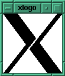
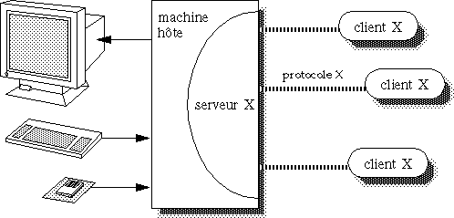
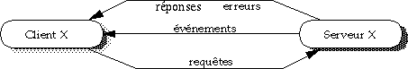

Histoire d'X
L'Echo de Linux (Juillet 1996) Jean-Michel Léon (Jean-Michel.Leon@sophia.inria.fr)Le principe des systèmes de fenêtrage est de découper un écran physique en plusieurs zones logiques, appelées fenêtres, chacune d'entre elles étant affectée à une application. Différentes applications peuvent donc s'exécuter parallèlement sur une machine et s'afficher sur un même écran, le système de fenêtrage étant chargé de gérer et maintenir la cohérence de chaque zone logique. Le dispositif de pointage (communément la souris) sert à désigner les différentes zones, pour par exemple, spécifier quelle est celle qui doit recevoir les caractères tapés au clavier.
Les principales avancées dans le domaine des systèmes de fenêtrage furent réalisées au centre de recherche Xerox PARC (Palo Alto Research Center), où furent développés les premiers systèmes alliant écrans à points, dispositif de pointage et multi fenêtrage. Xerox commercialisa tout d'abord les stations de travail Star en 1981, puis la société Apple commercialisa sur ce même principe la machine Lisa en 1983 et enfin le Macintosh en 1984.
Ce projet démarra en 1983, au MIT (Massachusetts Institute of Technology), son but était de fournir l'accès en libre service aux ressources informatiques du campus à tous les étudiants, aussi simplement et naturellement qu'ils avaient accès au téléphone. Pour ce faire, il fallait installer 4000 stations de travail Unix connectées entre elles, mais aussi imaginer et développer les logiciels nécessaires à leur fonctionnement [TXJ 93].
Cette entreprise sans précédent fut largement supportée et financée par les grands constructeurs informatiques de l'époque tels que Dec, IBM, Motorola,... qui fournirent à la fois le matériel et l'essentiel de la main d'&oe;uvre, le projet étant dirigé par les chercheurs du MIT, dont Bob Scheifler, qui dirigeait le MIT X Consortium. L'intérêt des constructeurs était de développer des technologies portables sur l'ensemble des architectures à base d'Unix.
De la diversité des sponsors, le projet Athena tira l'expérience de l'hétérogénéité des environnements informatiques; l'époque était encore aux grands systèmes propriétaires et ces notions n'étaient encore que peu explorées. La volonté d'interconnections, de partage des ressources et surtout l'échelle à laquelle celui-ci devait être opérationnel, sont quant à elles, à la base de l'orientation résolument distribuée de toutes les retombées du projet [Champine 91].
Athena regroupa en fait un grand nombre de projets, liés à l'objectif initial. Parmi ceux ayant abouti à des technologies utilisées à l'heure actuelle, citons le système d'authentification Kerberos [Garfinkel 91], le système de gestion de fichiers Andrew (Andrew File System) et bien entendu, le système de fenêtrage X (X Window System).
Basé initialement sur le système W, développé à Stanford par Paul Asente et Brian Reid, X [Scheifler 86] fut tout d'abord épuré puis à nouveau étendu. Entre 1983 et 1985, les versions se succédèrent rapidement, pour aboutir en 1985 à la première version publique : X10. En Février 1987, naquit X11R1 (X Version 11, Release 1) et depuis, les évolutions (releases) se succèdent, tout en gardant une totale compatibilité arrière; alors que chaque changement de version (X10, X11) introduisait une incompatibilité.
L'ouverture de X l'a fait adopter par l'ensemble des constructeurs actuels et toute station Unix achetée maintenant est livrée avec le Système X Window. A l'occasion de la dernière évolution (X11R6 sortie en mai 1994) l'ancien "MIT X Consortium" a été dissout [X 93], ses dirigeants estimant que leur travail était terminé et une nouvelle entité nommée "X Consortium Inc." [Scheifler 94] a été fondée, dont la charge est de promouvoir le système.
La prochaine version de X (nom de code Broadway) sera X11R7 qui sortira en Décembre 1996. Ce sera la derniere version développée par "X Consortium Inc." qui vivra son dernier hiver. X sera alors transféré dans le giron de l'Open Group qui prendra en charge sa maintenance.
D'un point de vue technique, X ne subira plus maintenant que du support de maintenance. Il demeure cependant une forte activité de recherche et de développement "autour de X" dans le domaine des extensions telles que le son, la vidéo, l'internationalisation,...
Dans le monde Unix, X n'a plus de concurrent. Le dernier en lice, NeWS (Network Window System), développé par Sun a été définitivement abandonné.
La plus grande confusion régnant au sujet du véritable nom de X, voici un court extrait du manuel X :
"The X Consortium requests that the following names
be used when referring to this software :
X
X Window System
X Version 11
X Window System, Version 11
X11
X Window System is a trademark of X Consortium, Inc."
Le système X Window est un système distribué : Son principal concepteur, Bob Scheifler, chercheur en systèmes d'exploitation et applications distribués, désirait pouvoir afficher plusieurs programmes sur un seul écran afin de les mettre au point. De ce désir d'utilisateur naquit la fonctionnalité la plus importante du système : une application peut être exécutée sur une machine et s'afficher sur une autre machine.
L'architecture générale du système est représentée figure 1. Il s'agit d'une architecture de type Client-Serveur.

Figure 1 : Architecture du système X
Un client X et un serveur X, sont donc deux programmes. Ils peuvent être exécutés sur des machines différentes et communiquent entre eux par l'intermédiaire d'un réseau, la plupart du temps, un réseau de type Ethernet [Metcalfe 76] utilisant la couche de transport TCP/IP [Postel 81]. Cette communication suit un certain nombre de conventions (que l'on pourrait assimiler à une langue) appelée protocole de communication : le protocole X. Ainsi, tout programme sachant demander des services graphiques en "parlant" le protocole X peut se connecter à un serveur "comprenant" le même protocole que lui. Un PC utilisant MS-Windows (Microsoft Windows) ou un Macintosh utilisant Système 7, peuvent par exemple faire tourner un serveur X qui affiche des programmes provenant de stations Unix.
L'intérêt de l'architecture client-serveur est multiple.
Lors des débuts de X, cette architecture constituait un apport notable, notamment du point de vue de la centralisation, mais ces choix peuvent paraître maintenant discutables.
Le serveur X offre les services graphiques de base nécessaires à tout système de fenêtrage :
C'est essentiellement dans l'arbitrage que se situent les difficultés de conception : un serveur X est susceptible d'avoir plusieurs clients. Ces clients tournent concurremment et utilisent les mêmes ressources. Le serveur X doit donc prendre en charge la gestion, le partage et la distribution de celles-ci.
De part la volonté de son concepteur (Bob Scheifler), le serveur X n'offre que des services de très bas niveau. D'autres systèmes tels que MS-Windows permettent de créer d'un seul appel un bouton ou un menu. Le serveur X, lui, ne sait qu'ouvrir et fermer des fenêtres, sans décoration, nues. C'est l'application qui devra, dans le cas du bouton, dessiner la bordure et le label.
Le protocole de communication entre un client X et un serveur X n'est pas symétrique. Un serveur est (comme son nom l'indique) au service du (ou des) client(s). Le client quant à lui veut tirer parti des services proposés par le serveur; il envoie pour ce faire des requêtes au serveur et reçoit éventuellement des réponses ou des erreurs (figure 2). Le serveur peut aussi envoyer des événements au client, pour lui signaler des modifications ou des actions de l'utilisateur.

Figure 3 : Requêtes et Evénements
Lorsqu'il reçoit une requête, le serveur X l'exécute. Si par exemple on lui demande de dessiner une ligne dans une fenêtre A, il va faire les vérifications d'usage sur l'existence de la fenêtre A et tracer la ligne désirée à l'intérieur.
Pour chaque requête reçue, le serveur va soit :
Dans tous les cas, il ne garde aucune mémoire des requêtes qu'il reçoit, pas plus que des tracés qu'il a effectués. Ceci implique que lorsque le contenu d'une fenêtre est effacé, que ce soit par programme ou par une manipulation de fenêtres, le serveur X ne sait pas restaurer son contenu; il appartient donc au programmeur de le faire.
Parmi les requêtes qu'un client peut exprimer à un serveur X, nous trouvons principalement :
Les erreurs sont traitées par le système et ne sont pas directement destinées au programmeur.
Bien évidemment, un client X n'écrit pas directement les requêtes X sur le réseau. Une interface de programmation et sa bibliothèque associée sont fournies, permettant d'envoyer des requêtes à un serveur X par un simple appel de fonction. C'est la bibliothèque X ou Xlib [Nye 88]. De plus, d'autres librairies de programmation appellées boites a outils ou toolkits fournissent des abstractions de plus haut niveau permettant d'accélerer les développements.